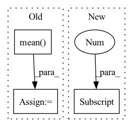

Pattern ID :1147
Before Change
// logit = logit.mean(dim=(1, 2))
posterior = Categorical(logits=logit)
prior = Categorical(logits=torch.zeros_like(logit))
reg = torch.distributions.kl_divergence(posterior, prior).mean()
// [n, h, w, k]
// weight = (-logit).detach().softmax(-1)
// oneHot = F.one_hot(code, num_classes=logit.shape[-1]).float()
// [n, h, w]After Change
// ssimLoss = -F.binary_cross_entropy(ssimLoss, torch.ones_like(ssimLoss))
regs = list()
n, h, w, k = logits[0] .shape
// ths = torch.tensor(float(h * w) / k, device=device).clamp(1.0, h * w)
In pattern: SUPERPATTERN
Frequency: 3
Non-data size: 3
Instances Fragment ID: 3534157
Project Name: xiaosu-zhu/mcquic
Commit Name: 889502a9674fd8fd3545cccd565e3adaf3aacc5c
Time: 2021-08-30
Author: xiaosu.zhu@outlook.com
File Name: src/mcqc/losses/quantization.py
M Class Name: CompressionLoss
N Class Name: CompressionLoss
M Method Name: forward(8)
N Method Name: forward(8)
M Parent Class: nn.Module
N Parent Class: nn.Module
M File Name: src/mcqc/losses/quantization.py
N File Name: src/mcqc/losses/quantization.py
M Start Line: 110
M End Line: 124
N Start Line: 56
N End Line: 124
Before Change
// logit = logit.mean(dim=(1, 2))
posterior = Categorical(logits=logit)
prior = Categorical(logits=torch.zeros_like(logit))
reg = torch.distributions.kl_divergence(posterior, prior).mean()
regs.append(reg)
regs = sum(regs) / len(logits)
// regs = 0.0
return ssimLoss, l1Loss + l2Loss, regsAfter Change
// ssimLoss = -F.binary_cross_entropy(ssimLoss, torch.ones_like(ssimLoss))
regs = list()
n, h, w, k = logits[0] .shape
// codes: [m, n, h, w]; logits: m * list(n, h, w, k); codeFreqMap: m * list([n, h, w])
for code, logit, freqMap in zip(codes.permute(1, 0, 2, 3), logits, codeFreqMap): Fragment ID: 3534159
Project Name: xiaosu-zhu/mcquic
Commit Name: 3b419aa2f7b4286b6ae991022fe7469650db4bbd
Time: 2021-08-01
Author: xiaosu.zhu@outlook.com
File Name: src/mcqc/losses/quantization.py
M Class Name: CompressionLoss
N Class Name: CompressionLoss
M Method Name: forward(6)
N Method Name: forward(6)
M Parent Class: nn.Module
N Parent Class: nn.Module
M File Name: src/mcqc/losses/quantization.py
N File Name: src/mcqc/losses/quantization.py
M Start Line: 50
M End Line: 57
N Start Line: 49
N End Line: 88
Before Change
)
if self.combining_operation == "mean":
e = iid_embeddings.mean(dim=1)
elif self.combining_operation == "sum":
e = iid_embeddings.sum(dim=1)
else:
raise ValueError("combining_operation must be in ["sum", "mean"].")After Change
for i in range(batch):
// remove NaNs
valid_x = x[i, ~torch.isnan(x[i, :, 0]), :]
trial_counts[i] = valid_x.shape[0]
trial_embeddings = self.trial_net(valid_x)
// apply combining operation over permutation dimension
combined_embedding.append(
self.combining_function(trial_embeddings, dim=0) Fragment ID: 3534158
Project Name: mackelab/sbi
Commit Name: 1352e77bdbc47aa4a4130679903b57672e48218c
Time: 2023-03-01
Author: jan.boelts@tum.de
File Name: sbi/neural_nets/embedding_nets.py
M Class Name: PermutationInvariantEmbedding
N Class Name: PermutationInvariantEmbedding
M Method Name: forward(2)
N Method Name: forward(2)
M Parent Class: nn.Module
N Parent Class: nn.Module
M File Name: sbi/neural_nets/embedding_nets.py
N File Name: sbi/neural_nets/embedding_nets.py
M Start Line: 271
M End Line: 284
N Start Line: 277
N End Line: 304